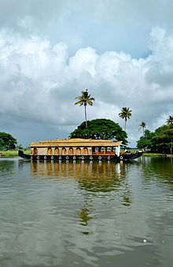
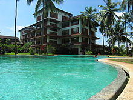

Kerala, a state situated on the tropical Malabar Coast of southwestern India,
is one of the most popular tourist destinations in the country. Named as one of
the ten paradises of the world by National Geographic Traveler, Kerala is famous
especially for its ecotourism initiatives and beautiful backwaters. Its unique
culture and traditions, coupled with its varied demography, have made Kerala one
of the most popular tourist destinations in the world. Growing at a rate of 13.31%,
the tourism industry is a major contributor to the state's economy.

A house Boat floating on Vembanad Kayal
Until the early 1980s, Kerala was a relatively unknown destination,
with most tourism circuits concentrated around the north of the country.
Aggressive marketing campaigns launched by the Kerala Tourism Development
Corporation—the government agency that oversees tourism prospects of the
state—laid the foundation for the growth of the tourism industry. In the
decades that followed, Kerala Tourism was able to transform itself into one of
the niche holiday destinations in India. The tag line Kerala God's Own Country
was adopted in its tourism promotions and became a global superbrand. Kerala is
regarded as one of the destinations with the highest brand recall.[4] In 2010
Kerala attracted 660,000 foreign tourist arrivals.[5]

Resorts dot the lengths and breadths of Kerala.
Kerala is a popular destination for both domestic as well as foreign tourists.
Kerala is well known for its beaches, backwaters in Alappuzha and Kollam, mountain
ranges and wildlife sanctuaries. Other popular attractions in the state include
the beaches at Kovalam, Muzhappilangad, Bekal and Kappad; backwater tourism and
lake resorts around Ashtamudi Lake, Kollam; hill stations and resorts at Munnar,
Wayanad, Nelliampathi, Vagamon and Ponmudi; and national parks and wildlife
sanctuaries at Wayanad, Periyar, Parambikulam, Silent Valley National Park
and Eravikulam National Park. The "backwaters" region—an extensive network
of interlocking rivers, lakes, and canals that centre on Vembanad Lake, also
see heavy tourist traffic. Heritage sites, such as the Padmanabhapuram Palace,
Hill Palace, and Mattancherry Palace, are also visited. To further promote
tourism in Kerala, the Grand Kerala Shopping Festival was started by the
Government of Kerala in 2007.[6] Since then it has been held every year
during the DecemberJanuary period.
Sithar Kundu View Point at Nelliyampathy, Palakkad Dist. Kerala, South India
The state's tourism agenda promotes ecologically sustained tourism,
which focuses on the local culture, wilderness adventures, volunteering
and personal growth of the local population. Efforts are taken to
minimize the adverse effects of traditional tourism on the natural
environment and enhance the cultural integrity of local people.The state has also made
deep inroads into MICE Tourism mainly centered at Kochi.